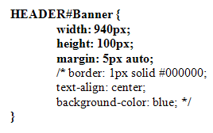
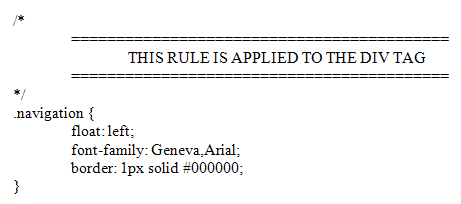

Adding Comments to CSS Code
When you're experimenting with the CSS, you can use comments instead of replacing or deleting code. Examine the following:
/* background-color: blue; */
background-image: url(../images/gradient_1.jpg);
The comment symbols are these:
/* */
The new symbols will turn any code into comments, meaning the browser will ignore the line. You can comment out more lines by moving the left or right comment symbols. Like this:

In the code above, the last three lines have been commented out, so they will be ignored.
Comments are quite useful for reminding yourself what a particular rule does. For example:

Try to add comments wherever possible. When you come back to your code a few
weeks down the line, it will make more sense if you've added comments.
In the next lesson, you'll learn how to position things with CSS.